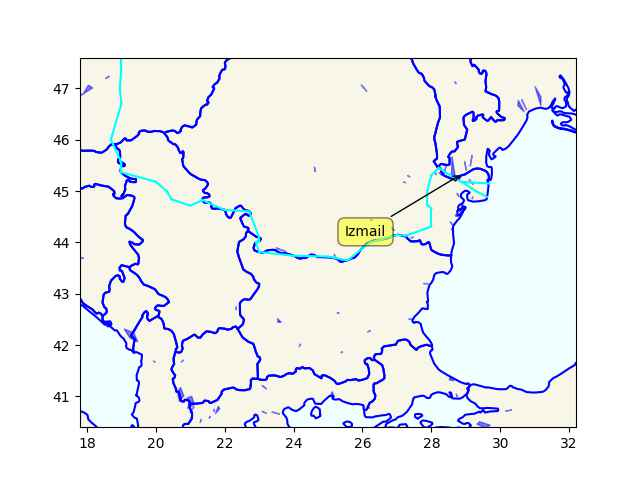

Week 31
Doctorow: "Tesla is having its own Dieselgate scandal. A stunning investigation by Steve Stecklow and Norihiko Shirouzu for Reuters reveals how Tesla was able to create its own demon-haunted car, which systematically deceived drivers about its driving range, and the increasingly desperate measures the company turned to as customers discovered the ruse"
"@capntransit@urbanists.social
RT @kevin_degood The allocation of space is a political choice and an expression of values.
RT @ emmanuelspv Before / After Rue Poulet in the 18th arrondissement of Paris. Instead of continuous car parking along both sides, larger sidewalks and trees"
{kind=link}
Good idea. They banned cars from a lot of places.
"The mayor of Paris, Anne Hidalgo, announced earlier this year the challenging and innovative concept that would make the capital a fifteen-minute city, 'la Ville des proximités'. The idea is to create neighbourhoods where every essential residents’ needs are easily within reach in 15 minutes by bike or walking"
TDB: "How is congressional stock trading like the weather? Everyone complains about it. Yet nobody ever does anything about it. Almost exactly one year ago.. then-House Minority Leader Kevin McCarthy suggested he would support this reform, saying, 'What I’ve told everybody, we will come back, and we will not only investigate this, we will come back with a proposal to change the current behavior [stock trading].' We’re still waiting"
Barry Adamson - Miles #music
"lcamtuf@infosec.exchange
They're versioning fires now"
![[-]](https://media.infosec.exchange/infosecmediaeu/media_attachments/files/110/758/215/782/705/340/original/f25adcf6830dd1c0.png){kind=link}
Zombie apocalypse art form seems mostly about a wish than a future scare. Think about it, apoc. destroys modern life, no more traffic, work, busy-busy pace.. People spread out into all corners of the world, live closer to nature, less density. Zombies represent a constant threat, kill-or-be-killed situation harks back to a pre-agriculture hunter-gatherer state, when we had to protect against predators. The world becomes more public, since the concept of most private property would lose meaning.
Fortune: "Spend enough time with ChatGPT and other ["AI"] chatbots and it doesn’t take long for them to spout falsehoods. Described as hallucination, confabulation or just plain making things up, it’s now a problem for every business, organization.. Some are using it on tasks with the potential for high-stakes consequences, from psychotherapy to researching and writing legal briefs"
The aim of higher education should not be to prepare students for "jobs". Such education will be stulted, half-assed ergo not much of an education.
Raptor Persecution UK: "New report by Wild Justice shows protected areas in England in worse state than previously thought"
"@andrewdessler@mastodon.world
we need a new analogy.
no, we're not 'loading the dice'.
instead, we're playing russian roulette and putting more bullets in the gun"
"@Adam_Cadmon1@mastodon.online
Last boost: Totally pushing the idea into the popular consciousness that all of the concurrent crises can be fought with more personal responsibility.
Right.
Same thing happened with recycling and all that. It's not that corps are making a gazillion plastic straws; it's you, personally, using too many"
H2 Central: "Bloom Energy launches advanced CHP Solution for net zero heating and cooling"
Ecowas is worried surely coups spreading means it will come to their countries one day. Mali and Burkina Faso would be worried if an Ecowas intervention in Niger succeeded theirs would be rolled back. If Ecowas intervenes there will be war.
If you have the power in the region, can stop shipments. Russia has the power - have to negotiate with that. Some RU opponents are too quick to use name-and-shame, procedure, rules of engagement, "rules based order" arguments to dismiss opponent's position but, in their case too, the niceties, formalities, rules had basis on actual power - the military/econ power of the United States. It was US that provided much of the military presence that allowed for the subsequent niceties to exist, that we so quickly accuse Russia of breaking today. But the power structure is changing; RU was not happy with the status quo, its warnings were ignored, so it started the latest engagement. And even though support for Ukraine sounds "unwavering" today they are not admitted to NATO, no rich country officially committed troops to the teather, noone said "one for all all for one". The rest is demagogueric bullshit.
Danube flows west from Ukraine, it could be used to transport grain as an alternative to the Black Sea. Russia wants to block that since its proposal for a new Black Sea grain deal were rebuffed.
u.sm_plot_ukr6()

BBC: "A Russian drone strike has hit Ukrainian port facilities at Izmail on the River Danube"
Added Eritrea and Niger to RU friendly African countries
H2 Central: "BP Lifts Hydrogen Project Pipeline to 2.8mn T/Yr"
H2 Central: "Alberta Government Is Providing $45 Million To Power New Hydrogen Technologies That Will Reduce Emissions And Create Jobs"
"@dx@social.ridetrans.it
This random comment has given me my new favourite argument for removing fares from public transit.
'The reason most public transportation is seen as ‘losing’ money is precisely because it charges for trips. If you don't charge fares, suddenly it can't ‘lose’ money. It just costs money, the same as the roads.'"
BloombergNEF: "The levelized cost of hydrogen [of] green H2 will become competitive with existing gray H2 plants operating at marginal cost in five markets by 2030"
#Aliens
![[-]](https://media.bsd.network/media_attachments/files/110/805/070/232/522/041/small/2543969493b8d12b.png){kind=link}
Nature: "Over the past generation, scientific publishing has become a monoculture. Every scientist now seeks to publish their work in a peer-reviewed journal and journals seek to increase their impact factors. Publishing papers is now synonymous with seeking status.
Monocultures are vulnerable to viruses and prone to collapse, and that is exactly what is happening to science. Taxpayers fund our work but journals paywall it and reap the revenue. The costs of universal prepublication peer review are extraordinary but the benefits are dubious: reviewers miss most of the errors in papers and fail to catch even the most brazen fraud. Many of the findings that pass peer review do not replicate and most of them may in fact be false. The artificial scarcity of opportunities to publish causes publication bias, which distorts our sense of what is true and what is not. Unsurprisingly, scientific progress seems to have stalled.
In our hearts, all of us know how we would pursue truth if we did not have to pursue status as well. The only question is: are we brave enough to do it?"
"@baldur@toot.cafe
Your reminder that I've written a book on the business risks of generative AI. 'The Intelligence Illusion'
https://illusion.baldurbjarnason.com/
Stuff I cover (not exhaustive):
- AGI is not happening any time soon.
- AGI and anthropomorphism will cripple your ability to think clearly about AI
- The AI industry has a long history of snake oil and fraud
- These models copy more than you think
- Hallucinations are still a thing and aren't going away.
- AI 'reasoning' is quite broken
- Security is a shit show"
RF KKK jr :) - that is kinda funny.. via @beforewisdom@veganism.social
NPR: "More than 804,000 federal student loan borrowers are in for a pleasant surprise. While the Supreme Court scuttled President Biden's efforts at widespread debt forgiveness, these borrowers are about to get an email from the U.S. Department of Education, notifying them that their debts will soon be automatically erased"
European Commision: "[12/22] The Digital Markets Act (DMA) establishes a set of narrowly defined objective criteria for qualifying a large online platform as a so-called 'gatekeeper'.. Example of the 'don'ts' - Gatekeeper platforms may no longer.. treat services and products offered by the gatekeeper itself more favourably.. prevent consumers from linking up to businesses outside their platforms.. What will be the consequences of non-compliance? Fines.. of up to 10% of the company’s total worldwide annual turnover, or up to 20% in the event of repeated infringements"
Kefir is a great poultry marinade. It will work on shish kebabs too or "shashlik" in Ruski.
On the Captain Cook (or Zheng) diet - dried poultry and sauerkraut, sometimes quick stews containing both plus some dried vegs
Who's going to tell Mel Gibson?
"[2000, WaPo, There was an] ancient Catholic teaching that 'the Jews killed Christ.' Since time immemorial, that accusation has been hauled out as an excuse for discrimination, pogrom and Holocaust... In the gospel story of Good Friday, Pontius Pilate is portrayed as a weak, frightened leader. Poor powerless Pilate wants to set Jesus free... It's a dramatic story. Biblical scholars say it probably served a political purpose for the early Christians by steering blame away from the Romans. But everything we know about the Roman government of Judaea and about Pontius Pilate himself tells us that this scenario is probably bunk"
His party became a plaything of ultra free-market fucknuts from US they sent their best guy to do black magic, and they managed to pry UK away from the EU weakening both (the long-term goal of such strategico is weakening everyone in Eurasia, not just Russia). Morris is one Ace c-ksucker. The fact he helped Bill Clinton should tell you all you need to know about him.
Whenever I hear this guy's name I keep thinking of the gobble gobble word faraş .. means a dustpan, the cleaning tool.
Doing something useful for a change Farage?
Breitbart: "Nigel Farage has officially launched a campaign to take on the big banks and represent members of the public who have unjustly had their accounts shut, following his own scandalous debanking over his political views"
"@jmtixhon@mastodon.world
Upper Bavaria Carriers Take Delivery Of 10 Hydrogen Solaris Buses"

Will the West experience a death of its influence in Africa?
TASS: "On Monday, BBC reported that Niger’s new authorities had suspended uranium and gold exports to France... Niger is the seventh-largest uranium producer worldwide accounting for 5% of global production. According to French mass media, Niger accounts for 15% - 17% of the uranium used to generate electricity in France"
There. They found some supporters. It will be trouble if Russia helps as well.
F24: "Burkina Faso, Mali say military intervention in Niger would be 'declaration of war'"
Barrons: "Nigeria Cuts Electricity To Niger After Coup"
Informed Comment: "Israel’s Protests are about the Rise of the Israeli Ayatollahs, not Democracy"
CNBC: "'Unprecedented heat': Iran begins two-day nationwide shutdown amid soaring temperatures"
Coke: The World's Worst Plastic Polluter?
"@breadandcircuses@climatejustice.social
How things look from the point of view of our capitalist rulers…"
![[-]](https://climatejustice.social/system/media_attachments/files/110/792/871/677/133/094/original/7b1e5dfb29a4ecbd.jpeg){kind=link}
WaPo is getting a lot of flack for that one #Climate
![[-]](https://cdn.masto.host/medmastodoncom/media_attachments/files/110/804/762/574/299/223/small/6a81a542da9cd64d.png){kind=link}
With feedparser the post['media_content'][i] gives the i'th media
content link, eg an image. This is the simplest viewer ever.
Getting RSS URL from Masto address? Dude "https://"+ addr[addr.find("@")+1:] + "/@" + addr[0:addr.find("@")] + ".rss"
Why implement a Web RSS reader for all my Masto follows based on the CSV export of follows? Because I can. Open source, open data rules.
Business Green: "[A] 2021 survey of 738 climate economics papers from top academic journals found that the median prediction of economists was that 3°C of warming would reduce global GDP by just five per cent, and a warming of 5°C would only see a 10 per cent reduction"
H2 View: "German zero-emission truck manufacturer Quantron has signed a Letter of Intent (LoI).. for the procurement of 253 hydrogen-powered vehicles as part of a French ecosystem project proposal"
BBC News: "Plans approved to turn Birmingham car park into urban farm"
Beat.Dowsing - Renegades #music
"@MostlyHarmless@thecanadian.social
You millennials and your obsession with public healthcare. Back in my day we just died"
#Speech
![[-]](https://cdn.fosstodon.org/cache/media_attachments/files/110/790/486/190/299/967/original/1a9f8e3494bee274.jpg){kind=link}
Oliver Stone is a milquetoast critic, dabbles in conspiracies on JFK implying gov had an hand in his death (untrue, JFK was an incompetent jackass managed got himself shot, all by himself) his work jives well with the grand bargain. Corporations like his movies, he is useful, so he is allowed to do what he does. Maybe Wall Street could've made a difference, but Stone made Gekko look cool - failed. Michael Douglas says he runs into finance types all the time and they tell him "they loved that Gekko character and want to be like him". GG was supposed to be the bad guy in that work. O.S. milquetoast production failed to stress it.
PC World: "Vivaldi, Mozilla raise alarms over Google’s proposed ‘DRM for the Web’"
The Matrix symbolizes government - it is "everywhere", defines the rules, bureucratic, "opressive". Then ragtag freedom fighters, rebel simple humans, like early US adventerous settlers?, are idolized, when they rebel with guns -the right loves that part- it is almost like an mental orgasm for them, it is very cool. The cultural left is happy too because it is, well, opressive government like in 1973, ew like Nixon or something (who ended the Vietnam war but whatever).. It is not just films, games that causes the shooting phenomena I want to make that clear, the pro-market anti-gov ideology is everywhere (the real Matrix?), which is funded, nurtured by private interests. This ideology, on its fringes, will cause school shootings. Said interests are squarely responsible for the deaths of those kids.
A public school is a government run institution, so gun violence there is like a mini-attack against the government. Kids learn who the bad guy is through their media, popular culture, or the political discourse which seeps through to them through grown ups, some on the extremes can apply it in real life. Parkland, Columbine were both public high schools. The kids who did the shooting at Columbine maybe were acting out the lobby scene from The Matrix.
"[A researcher looked at] 134 [US] school shootings from 2000 to 2018. Only eight of these occurred in private schools while 122 occurred in public schools"
"@Ruth_Mottram@fediscience.org
So, the #BBC got here. And they're hosting their own server it seems..."

Batteries on fire. Again
7News: "Convergent offers words of apology as solar farm fire continues to burn.. In a statement, Convergent Energy and Power said the [burning] battery storage system it operates near Chaumont was manufactured by General Electric"
RU foreign min called for 'restoration of constitutional order', does that mean return to previous status-quo, exactly...? I hope stakeholders in the region / abroad did not get encouragement there, when the chips are down anything can happen.
Strong words.. A commenter says Ecowas is serious, they indicated military intervention, and they've done this sort of thing before in Sierra Leone, Liberia during the 90s. But if Niger gets backing somehow there can be trouble.
The Street Journal: "ECOWAS gave [Niger] coup plotters one week to reinstate ousted president"
Free-market triage
"UHS says company favors patients whose insurance pays more"
#Monopoly #Millenials
![[-]](https://thecanadian.social/system/media_attachments/files/110/792/304/943/897/724/small/0fcfb83a35179e34.jpg){kind=link}
PV Magazine: "Inner Mongolia University researchers have reported that the Klebsiella pneumoniae Y7-3 strain, isolated from sheep rumen, can directly produce high-yield hydrogen using inexpensive straw as a raw material. The strain increased hydrogen production by 15.03% compared to the control group using corn stalk and yeast powder. The researchers published their findings in Energy, stating that anaerobic fermentation with 50 g L−1 of corn straw as the carbon source could produce 1253.72 ± 55.67 mL/L of hydrogen in 24 hours"
PV Magazine: "Germany to use hydrogen ‘in all sectors’.. The German authorities have announced plans to double domestic electrolysis capacity"
The Economist: "[2011 A] sober view of globalisation deserves a wide audience. But whether it will get it is another matter. This is partly because 'World 3.0' is a much less exciting title than 'The World is Flat' or 'Jihad vs. McWorld'. And it is partly because people seem to have a natural tendency to overestimate the distance-destroying quality of technology. Go back to the era of dictators and world wars and you can find exactly the same addiction to globaloney. Henry Ford said cars and planes were 'binding the world together'. Martin Heidegger said that 'everything is equally far and equally near'. George Orwell got so annoyed by all this that he wrote a blistering attack on all the fashionable talk about the abolition of distance and the disappearance of frontiers.. in 1944"
"@ajsadauskas@aus.social
Hi, we're a tech startup run by libertarian Silicon Valley tech bros.
We're not a newspaper, we're a content portal.
We're not a taxi service, we're a ride sharing app.
We're not a pay TV service, we're a streaming platform.
We're not a department store, we're an e-commerce marketplace.
We're not a financial services firm, we're crypto.
We're not a space agency, we're a group of visionaries who are totally going to Mars next year.
We're not a copywriting and graphic design agency, we're a large language model generative AI platform.
Oh sure, we compete against those established businesses. We basically provide the same goods and services.
But we're totally not those things. At least from a legal and PR standpoint.
And that means all the laws and regulations that have built up over the decades around those industries don't apply to us.
Things like consumer protections, privacy protections, minimum wage laws, local content requirements, safety regulations, environmental protections... They totally don't apply to us.
Even copyright laws — as long as we're talking about everyone else's intellectual property.
We're going to move fast and break things — and then externalise the costs of the things we break.
We've also raised several billion in VC funding, and we'll sell our products below cost — even give them away for free for a time — until we run our competition out of the market.
Once we have a near monopoly, we'll enshitify the hell out of our service and jack up prices.
You won't believe what you agreed to in our terms of service agreement.
We may also be secretly hoarding your personal information. We know who you are, we know where you work, we know where you live. But you can trust us.
By the time the regulators and the general public catch on to what we're doing, we will have well and truly moved on to our next grift.
By the way, don't forget to check out our latest innovation. It's the Uber of toothpaste!"
"@arstechnica@mastodon.social
Microsoft Teams + Office bundle leads to official EU antitrust probe
It's Microsoft's first formal EU antitrust investigation in over a decade"
Great idea #Corporations #Rent
![[-]](https://media.mas.to/masto-public/media_attachments/files/110/780/798/887/141/267/original/2d34038cf67cb746.png){kind=link}
People are in awe of some of the freedoms enjoyed by a US film writer, director. How can you speak against the government, hell, even the concept of government? That has nothing to do with the "strength of their democracy", but everything to do with the current power structure in the country. Corporations won the war against all other power centers in US, now through their movies they are rubbing everyone else's noses in it. This is how heroes of a movie can enter a government building with guns (lots of guns), shoot an innocent employee (the guy wasn't overtaken by 'the Matrix' so he'd die in his pod), and continue a rampage with big-beat dance music on full blast in the background, bad guys are government, good guys are this rag-tag individuals, resembling early settlers of US in the wild frontier maybe? How nice. The audience is sold.
They make such movies because they can. They are allowed to make them.
I believe I watched 2014 Germany - Argentina final at the Berlin Marriott. Great match.
Where is "AI"? Driving should be simple for it since it already "solved" language, about to become self-aware 😶
Ars Technica: "Waymo kills off autonomous trucking program.. Google's cost cutters are taking another bite out of Waymo. After being hit by layoffs that cut 8 percent of staff, it now looks like the self-driving truck program—Waymo Via—is dead"
Slate: "Tesla Sold a Myth About Batteries That Everyone Wanted to Be True.. But the problem isn’t just that Tesla hoodwinked customers, investors, and regulators about the extent of its vehicles’ real-world range, an act evocative of the infamous VW 'dieselgate' scandal. This pattern only fueled an even larger myth: that loading up EVs with massive battery packs is a viable, sustainable, apple-to-apples replacement for gas vehicles"
Now some Western countries sanction this or that Haitian leader.. the situation they are in is not their fault.
Miami Rice = Miami Vice
"Miami Rice Invades Haiti. In 1987, [new junta leader supported by US] Namphy received IMF loans valued at $24.6 million in exchange for agreeing to slash rice tariffs from 150% to 50%, the lowest in the Caribbean. He opened all of Haiti’s ports to commercial activity and agreed to stop what little support the government had offered Haitian farmers. Meanwhile, Haiti’s military elite saw an opportunity to make a profit smuggling American rice.. In the United States, the passage of the 1985 Farm Bill significantly boosted subsidies to American rice growers. By 1987, 40% of American rice growers' profits came from the government. Heavily subsidized American rice could sell at prices far below the market value of Haitian rice. Haitian farmers never stood a chance against this unfair competition".. In Haiti, imported American rice is called 'Miami rice' because it is shipped from Miami in sacks stamped 'Miami, FLA.' By December 1987, Haiti’s rice production had shrunk to 75% of Haitian needs"
Religion at its core is left wing. A lot of uprisings started bcz of debt.
"@qurlyjoe@mstdn.social
Apparently, the Bible verses about a talking snake are literal, but the part about forgiving everyone's debt is just a metaphor"
NPR: "Actors take to the internet to show their residual checks, with some in the negative.. Mandy Moore, who starred in NBC's This Is Us, said she has received streaming residual payments of less than a dollar. She has been on the picket line as part of the actors strike"
Regions where wet-bulb temp above 19 C for July 2019. Around the Medi, part of Black Sea, Greece/West TR, Asia, SE of US looks bad.
![[-]](https://cdn.fosstodon.org/media_attachments/files/110/787/616/669/269/215/original/9d31680fb1928a6e.jpg){kind=link}
Niger's resources are visible on the map below shared earlier, lota uranium
"'NATO is a flawed organization. They can never contain Russia' – Eritrea’s President Afwerki at a meeting with Putin"
"Moscow Has Forgiven $23 Billion Debts Owed By African Countries"
UA advances after three weeks.. some visible gains.. But dam, Holy Novovodiane.. It looks like during all this Ukranian counteroffensive, Russians sneaked in an offensive of their own.
geo = [['Main'],['Spirne', 'Berestove'], ['Orikhiv'],
['Lobkove'],['Makarivka'], ['Vuhledar', 'Velyka Novosilka'],
['Marinka'],['Avdiivka', 'Opytne'],['Karmazynivka', 'Novovodiane'],
['Yahidne'],['Orikhovo-Vasylivka'],['Kreminna']]
u.sm_plot_ukr4('ukrdata/fl-0729.csv','ukrdata/fl-0703.csv',geo,4,3,zoom=0.03,fsize=(10,12),)
"@cstross@wandering.shop
.. Just been informed by my GP practice's pharmacist that there's now a national shortage of Rybelsus, aka Semaglutide, my most effective diabetes medication, that's likely to last into 2024. Influencers have been boosting it as a weight loss drug (it's the same drug—in tablet form—as Ozembic/Wegovy) and private clinics are buying up all the stock for image-conscious idiots, depriving diabetics of access"